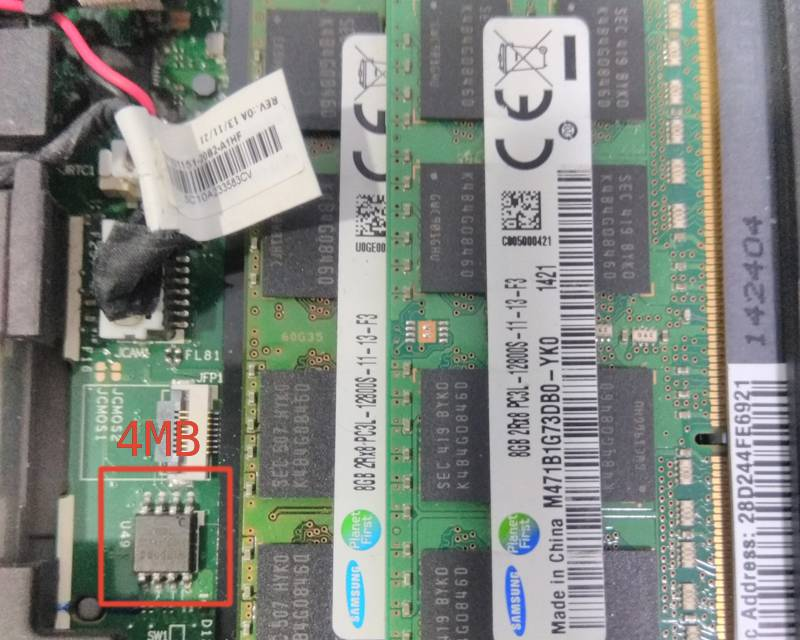
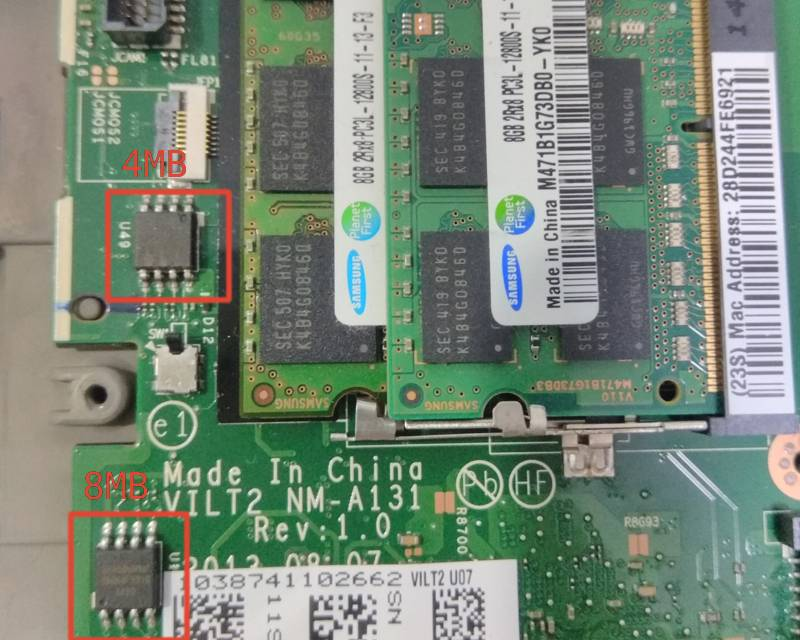

Lenovo ThinkPad T440p
This page describes how to run coreboot on Lenovo ThinkPad T440p.
Required proprietary blobs
Please see mrc.bin.
Flashing instructions
T440p has two flash chips, an 8 MiB W25Q64FV and a 4 MiB W25Q32FV. To flash coreboot, you just need to remove the big door according to the T440 Hardware Maintenance Manual and flash the 4 MiB chip.

To access the 8 MiB chip, you need to remove the base cover.

The flash layout of the OEM firmware is as follows:
00000000:00000fff fd
00001000:00002fff gbe
00003000:004fffff me
00500000:00bfffff bios
After flashing coreboot, you may need to re-plug the AC adapter to make the laptop able to power on.
Known Issues
Cannot get the mainboard serial number from the mainboard: the OEM UEFI firmware gets the serial number from an “emulated EEPROM” via I/O port 0x1630/0x1634, but it’s still unknown how to make it work
The dGPU does not currently work in Windows.
Working
boot Arch Linux with Linux 4.19.77 from SeaBIOS payload
integrated graphics init with libgfxinit
EHCI debug: the port is the non-charging USB2 port on the right
video output: internal (eDP), miniDP, dock DP, dock HDMI
ACPI support
keyboard and trackpoint
SATA
M.2 SATA SSD
USB
Ethernet
WLAN
WWAN
bluetooth
virtualization: VT-x and VT-d
dock
CMOS options: wlan, trackpoint, fn_ctrl_swap
internal flashing when IFD is unlocked
using
me_cleanerdGPU (must be enabled in CMOS options)